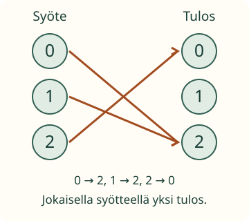

<link rel="stylesheet" href="lesson.css">
<section data-function-lesson>

<section data-teaching-step="1" data-lesson-role="teaching-step">
<p> Loikka tekee lajittelulaitteen ohjetaulua. Syötekoodi määrää lokeron. Voiko sama koodi määrätä kaksi eri lokeroa? Entä voivatko eri koodit määrätä saman lokeron?</p>
<h2>Jokaiselle sallitulle syötteelle yksi tulos</h2>
<p><strong>Tavoite:</strong> Rakennan ohjetaulun, jossa jokainen sallittu syöte saa täsmälleen yhden tuloksen.</p>
<p><strong>Syöte</strong> on tauluun annettu koodi ja <strong>tulos</strong> sen määräämä lokero. Sovitaan tässä sallituiksi syötteiksi 0, 1 ja 2. Myös tulosvaihtoehdot ovat 0, 1 ja 2.</p>
</section>


<section data-teaching-step="2" data-lesson-role="teaching-step">
<h3>1. Eri syötteet voivat saada saman tuloksen</h3>
<figure data-lesson-role="worked-example"><figcaption>Vasemman puolen jokaisesta syötteestä lähtee yksi nuoli. Oikealla samaan tulokseen saa tulla monta nuolta.</figcaption></figure>
<p>Tässä 0 ja 1 saavat molemmat tuloksen 2. Se sopii, koska kumpikin syöte määrää yhden tuloksen. Kaikkien tulosvaihtoehtojen ei tarvitse olla käytössä.</p>
<p>Tällaista arvon määräämistä kutsutaan <strong>funktioksi</strong>. Jos nimeämme kuvan funktion f:ksi, merkintä f(1) = 2 kertoo sen arvon syötteellä 1. Merkintä f(1) ei tarkoita f kertaa 1.</p>
</section>


<section data-teaching-step="3" data-lesson-role="teaching-step">
<h3>Mikä rikkoisi ehdon?</h3>
<p>Jos syöte 1 antaisi sekä tuloksen 0 että tuloksen 2, yhdellä syötteellä olisi kaksi eri arvoa. Silloin taulu ei määrittäisi funktiota tästä syötejoukosta. Jos syötteelle 2 ei olisi nuolta lainkaan, taulu olisi keskeneräinen sovitulle syötejoukolle.</p>
<p>Sama havainto 1 → 2 saa toistua taulukossa: kaksi samanlaista riviä ei luo kahta <em>eri</em> tulosta. Ratkaisevaa on arvojen ristiriita, ei rivien toistuminen.</p>
</section>


<section data-teaching-step="4" data-lesson-role="teaching-step">
<h3>2. Siirto: nuolten suunta ratkaisee</h3>
<p>Työpajan kävijämäärät on kirjattu näin: tiistai → 6, keskiviikko → 6, torstai → 9. Päivä määrää tässä aineistossa yhden määrän. Mutta luku 6 ei määrää yhtä päivää, sillä sen kanssa on kaksi päivää. Suhteen kääntäminen ei siis aina tuota funktiota. Sallittu syötejoukko ja suunta on kerrottava.</p>
</section>


<section data-teaching-step="5" data-lesson-role="teaching-step">
<p data-lesson-role="question"><strong>Ennusta:</strong> Jos kaikki kolme syötettä osoittavat tulokseen 2, onko taulu edelleen funktion määrittely?</p>
<details data-lesson-role="answer"><summary>Ajatus</summary><p>On. Jokaisella syötteellä on yksi tulos, vaikka tulos on aina sama. Tällaista funktiota kutsutaan vakiofunktioksi.</p></details>
</section>


<section data-teaching-step="6" data-lesson-role="teaching-step">
<div data-practice hidden>
<h3>Korjaa ja rakenna nuolitaulu</h3>
<p>Korjaa ristiriita ja puuttuva nuoli. Painike lisää tai poistaa nuolen. Valitse tulokset itse; eri syötteet saavat saman tuloksen.</p>
<fieldset data-audience-columns><legend>Sallitut syötteet 0, 1 ja 2</legend><div data-visual-column><div data-scene></div>
<label>Korosta tutkittava syöte <select data-view><option>0</option><option>1</option><option>2</option></select></label>
<p data-view-text></p><details data-lesson-role="hint"><summary>Apua</summary><p>Käy vasemman puolen syötteet yksi kerrallaan läpi. Jokaisesta pitää lähteä yksi nuoli. Älä vaadi oikean puolen tuloksilta samaa: samaan tulokseen saa tulla monta nuolta ja jokin tulos voi jäädä käyttämättä.</p></details></div><div data-response-column><div class="arrow-row" role="group" aria-label="Syötteen 0 nuolet"><strong>Syöte 0</strong><button type="button" data-x="0" data-y="0" aria-pressed="false" aria-label="Nuoli syötteestä 0 tulokseen 0">0 → 0</button><button type="button" data-x="0" data-y="1" aria-pressed="false" aria-label="Nuoli syötteestä 0 tulokseen 1">0 → 1</button><button type="button" data-x="0" data-y="2" aria-pressed="false" aria-label="Nuoli syötteestä 0 tulokseen 2">0 → 2</button></div>
<div class="arrow-row" role="group" aria-label="Syötteen 1 nuolet"><strong>Syöte 1</strong><button type="button" data-x="1" data-y="0" aria-pressed="false" aria-label="Nuoli syötteestä 1 tulokseen 0">1 → 0</button><button type="button" data-x="1" data-y="1" aria-pressed="false" aria-label="Nuoli syötteestä 1 tulokseen 1">1 → 1</button><button type="button" data-x="1" data-y="2" aria-pressed="false" aria-label="Nuoli syötteestä 1 tulokseen 2">1 → 2</button></div>
<div class="arrow-row" role="group" aria-label="Syötteen 2 nuolet"><strong>Syöte 2</strong><button type="button" data-x="2" data-y="0" aria-pressed="false" aria-label="Nuoli syötteestä 2 tulokseen 0">2 → 0</button><button type="button" data-x="2" data-y="1" aria-pressed="false" aria-label="Nuoli syötteestä 2 tulokseen 1">2 → 1</button><button type="button" data-x="2" data-y="2" aria-pressed="false" aria-label="Nuoli syötteestä 2 tulokseen 2">2 → 2</button></div>
<div data-function-actions><button type="button" data-action="check">Tarkista funktion ehto</button>
<button type="button" data-action="clear">Poista kaikki nuolet</button>
<button type="button" data-action="restore">Alkutaulu takaisin</button></div>
<p data-feedback role="status" aria-live="polite"></p></div></fieldset></div>

</section>


<section data-teaching-step="7" data-lesson-role="teaching-step">
<details data-lesson-role="teaching-step"><summary>Kokeile lisää</summary><p>Rakenna vakiofunktio: jokainen syöte samaan tulokseen. Käännä nuolet mielessäsi. Nyt yhdestä uudesta syötteestä lähtisi monta nuolta. Käänteinen suhde ei tällä kertaa olisi funktio.</p><p>Jos lausekkeen arvon laskeminen on tuttua, tutki erikseen sääntöä g(x) = x + 2. Syötteillä 0, 1 ja 2 arvot ovat 2, 3 ja 4. Funktion ehto ja arvojen laskutaito ovat eri asioita.</p></details>
</section>

<details class="teacher" data-lesson-role="teacher-note"><summary>Aikuiselle ja ilman ruutua</summary><p>Luokat 7–9. M79-DEP-01 on required-esitieto; M79-VAR-01 vahva tuki. Pääpolku ei edellytä kertotaulua, negatiivisten lukujen laskuja tai M79-EXPR-EVAL-taitoa. Ne ovat Liten joidenkin laskutehtävien lisäoletuksia, eivät tämän käsitteen uusia kanonisia portteja. Numeerisen lisäesimerkin summat on annettu.</p><p>Tee kolme syöte- ja kolme tuloskorttia ja lisää lankanuolia. Rakenna kaksi eri funktiota, joista toisessa tulos toistuu. Lisää yksi ristiriitainen nuoli ja korjaa. Tässä koko äärellinen syötejoukko on annettu. Sen täydellinen taulu määrittelee funktion juuri tällä joukolla. Muutama toistuva havainto tuntemattomasta koneesta ei todista toimintaa kaikilla mahdollisilla luvuilla.</p><p>Ruutuharjoitus tarkistaa tämän pienen taulun ehdon ja hyväksyy kaikki sitä täyttävät taulut, myös vakiofunktiot. Se ei todenna riippumatonta määritelmän tuottamista, arvojen laskusujuvuutta, kuvaajataitoa, yleistä todistamista tai pysyvää oppimista. Mitään ei tallenneta eikä suullista selitystä vahvisteta painikkeella.</p></details>

<section data-teaching-step="8" data-lesson-role="teaching-step">
<p data-lesson-role="question"><strong>Lopuksi:</strong> Miksi sama tulos eri syötteille käy, mutta eri tulokset yhdelle syötteelle eivät? Mitä puuttuva nuoli merkitsisi sovitulle syötejoukolle?</p>
</section>

</section>
